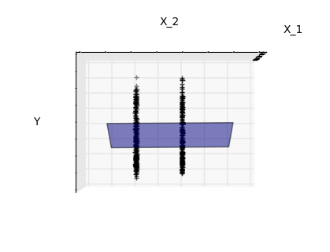
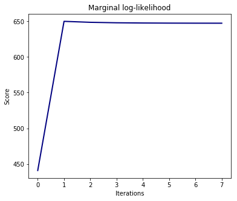
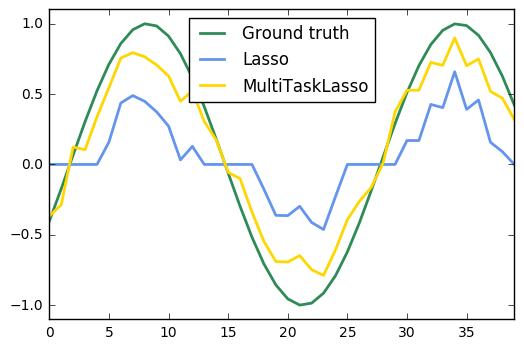
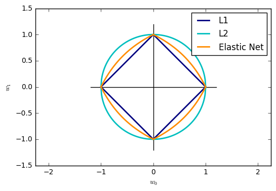
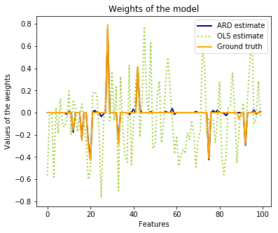

Linear model
Introduction
Examples
1. Linear Regression Example (source)
This example uses the only the first feature of the diabetes dataset, in
order to illustrate a two-dimensional plot of this regression technique. The
straight line can be seen in the plot, showing how linear regression attempts
to draw a straight line that will best minimize the residual sum of squares
between the observed responses in the dataset, and the responses predicted by
the linear approximation.
The coefficients, the residual sum of squares and the variance score are also calculated.
import matplotlib.pyplot as plt import numpy as np from sklearn import datasets, linear_model # Load the diabetes dataset diabetes = datasets.load_diabetes() # Use only one feature diabetes_X = diabetes.data[:, np.newaxis, 2] # Split the data into training/testing sets diabetes_X_train = diabetes_X[:-20] diabetes_X_test = diabetes_X[-20:] # Split the targets into training/testing sets diabetes_y_train = diabetes.target[:-20] diabetes_y_test = diabetes.target[-20:] # Create linear regression object regr = linear_model.LinearRegression() # Train the model using the training sets regr.fit(diabetes_X_train, diabetes_y_train) # The coefficients print('Coefficients: \n', regr.coef_) # The mean squared error print("Mean squared error: %.2f" % np.mean((regr.predict(diabetes_X_test) - diabetes_y_test) ** 2)) # Explained variance score: 1 is perfect prediction print('Variance score: %.2f' % regr.score(diabetes_X_test, diabetes_y_test)) # Plot outputs plt.scatter(diabetes_X_test, diabetes_y_test, color='black') plt.plot(diabetes_X_test, regr.predict(diabetes_X_test), color='blue', linewidth=3) plt.xticks(()) plt.yticks(()) plt.show()
Coefficients: [ 938.23786125] Mean squared error: 2548.07 Variance score: 0.47

2. Sparsity Example: Fitting only features 1 and 2 (source)
Features 1 and 2 of the diabetes-dataset are fitted and
plotted below. It illustrates that although feature 2
has a strong coefficient on the full model, it does not
give us much regarding y when compared to just feature 1
import matplotlib.pyplot as plt import numpy as np from mpl_toolkits.mplot3d import Axes3D from sklearn import datasets, linear_model diabetes = datasets.load_diabetes() indices = (0, 1) X_train = diabetes.data[:-20, indices] X_test = diabetes.data[-20:, indices] y_train = diabetes.target[:-20] y_test = diabetes.target[-20:] ols = linear_model.LinearRegression() ols.fit(X_train, y_train) ##################################### # Plot the figure def plot_figs(fig_num, elev, azim, X_train, clf): fig = plt.figure(fig_num, figsize=(4, 3)) plt.clf() ax = Axes3D(fig, elev=elev, azim=azim) ax.scatter(X_train[:, 0], X_train[:, 1], y_train, c='k', marker='+') ax.plot_surface(np.array([[-.1, -.1], [.15, .15]]), np.array([[-.1, .15], [-.1, .15]]), clf.predict(np.array([[-.1, -.1, .15, .15], [-.1, .15, -.1, .15]]).T ).reshape((2, 2)), alpha=.5) ax.set_xlabel('X_1') ax.set_ylabel('X_2') ax.set_zlabel('Y') ax.w_xaxis.set_ticklabels([]) ax.w_yaxis.set_ticklabels([]) ax.w_zaxis.set_ticklabels([]) #Generate the three different figures from different views elev = 43.5 azim = -110 plot_figs(1, elev, azim, X_train, ols) elev = -.5 azim = 0 plot_figs(2, elev, azim, X_train, ols) elev = -.5 azim = 90 plot_figs(3, elev, azim, X_train, ols) plt.show()



3. Ordinary Least Squares and Ridge Regression Variance (source)
Due to the few points in each dimension and the straight line that linear regression uses to follow these points as well as it can, noise on the observations will cause great variance as shown in the first plot. Every line's slope can vary quite a bit for each prediction due to the noise induced in the observations.
Ridge regression is basically minimizing a penalised version
of the least-squared function. The penalising shrinks the
value of the regression coefficients.
Despite the few data points in each dimension, the slope
of the prediction is much more stable and the variance
in the line itself is greatly reduced, in comparison to that
of the standard linear regression
import numpy as np import matplotlib.pyplot as plt from sklearn import linear_model X_train = np.c_[.5, 1].T y_train = [.5, 1] X_test = np.c_[0, 2].T np.random.seed(0) classifiers = dict(ols=linear_model.LinearRegression(), ridge=linear_model.Ridge(alpha=.1)) fignum = 1 for name, clf in classifiers.items(): fig = plt.figure(fignum, figsize=(4, 3)) plt.clf() plt.title(name) ax = plt.axes([.12, .12, .8, .8]) for _ in range(6): this_X = .1 * np.random.normal(size=(2, 1)) + X_train clf.fit(this_X, y_train) ax.plot(X_test, clf.predict(X_test), color='.5') ax.scatter(this_X, y_train, s=3, c='.5', marker='o', zorder=10) clf.fit(X_train, y_train) ax.plot(X_test, clf.predict(X_test), linewidth=2, color='blue') ax.scatter(X_train, y_train, s=30, c='r', marker='+', zorder=10) ax.set_xticks(()) ax.set_yticks(()) ax.set_ylim((0, 1.6)) ax.set_xlabel('X') ax.set_ylabel('y') ax.set_xlim(0, 2) fignum += 1 plt.show()
4. Plot Ridge coefficients as a function of the L2 regularization (source)
Ridge Regression is the estimator used in this example.
Each color in the left plot represents one different dimension of the
coefficient vector, and this is displayed as a function of the
regularization parameter. The right plot shows how exact the solution
is. This example illustrates how a well defined solution is
found by Ridge regression and how regularization affects the
coefficients and their values. The plot on the right shows how
the difference of the coefficients from the estimator changes
as a function of regularization.
In this example the dependent variable Y is set as a function
of the input features:
$y = X*w + c. $
The coefficient vector w is randomly sampled from a normal distribution, whereas the bias term c is set to a constant. As alpha tends toward zero the coefficients found by Ridge regression stabilize towards the randomly sampled vector w. For big alpha (strong regularisation) the coefficients are smaller (eventually converging at 0) leading to a simpler and biased solution. These dependencies can be observed on the left plot. The right plot shows the mean squared error between the coefficients found by the model and the chosen vector w. Less regularised models retrieve the exact coefficients (error is equal to 0), stronger regularised models increase the error. Please note that in this example the data is non-noisy, hence it is possible to extract the exact coefficients.
import matplotlib.pyplot as plt import numpy as np from sklearn.datasets import make_regression from sklearn.linear_model import Ridge from sklearn.metrics import mean_squared_error clf = Ridge() X, y, w = make_regression(n_samples=10, n_features=10, coef=True, random_state=1, bias=3.5) coefs = [] errors = [] alphas = np.logspace(-6, 6, 200) # Train the model with different regularisation strengths for a in alphas: clf.set_params(alpha=a) clf.fit(X, y) coefs.append(clf.coef_) errors.append(mean_squared_error(clf.coef_, w)) # Display results plt.figure(figsize=(20, 6)) plt.subplot(121) ax = plt.gca() ax.plot(alphas, coefs) ax.set_xscale('log') plt.xlabel('alpha') plt.ylabel('weights') plt.title('Ridge coefficients as a function of the regularization') plt.axis('tight') plt.subplot(122) ax = plt.gca() ax.plot(alphas, errors) ax.set_xscale('log') plt.xlabel('alpha') plt.ylabel('error') plt.title('Coefficient error as a function of the regularization') plt.axis('tight') plt.show()

5. Plot Ridge coefficients as a function of the regularization (source)
Shows the effect of collinearity in the coefficients of an estimator.
Regression is the estimator used in this example. Each color represents a different feature of the coefficient vector, and this is displayed as a function of the regularization parameter.
This example also shows the usefulness of applying Ridge regression to highly ill-conditioned matrices. For such matrices, a slight change in the target variable can cause huge variances in the calculated weights. In such cases, it is useful to set a certain regularization (alpha) to reduce this variation (noise).
When alpha is very large, the regularization effect dominates the squared loss function and the coefficients tend to zero. At the end of the path, as alpha tends toward zero and the solution tends towards the ordinary least squares, coefficients exhibit big oscillations. In practise it is necessary to tune alpha in such a way that a balance is maintained between both.
import numpy as np import matplotlib.pyplot as plt from sklearn import linear_model # X is the 10x10 Hilbert matrix X = 1. / (np.arange(1, 11) + np.arange(0, 10)[:, np.newaxis]) y = np.ones(10) ######################################### # Compute paths n_alphas = 200 alphas = np.logspace(-10, -2, n_alphas) clf = linear_model.Ridge(fit_intercept=False) coefs = [] for a in alphas: clf.set_params(alpha=a) clf.fit(X, y) coefs.append(clf.coef_) ######################################## # Display results ax = plt.gca() ax.plot(alphas, coefs) ax.set_xscale('log') ax.set_xlim(ax.get_xlim()[::-1]) # reverse axis plt.xlabel('alpha') plt.ylabel('weights') plt.title('Ridge coefficients as a function of the regularization') plt.axis('tight') plt.show()
6. Bayesian Ridge Regression (source)
Computes a Bayesian Ridge Regression on a synthetic dataset.
bayesian_ridge_regression for more information on the regressor.
Compared to the OLS (ordinary least squares) estimator, the coefficient weights are slightly shifted toward zeros, which stabilises them.
As the prior on the weights is a Gaussian prior, the histogram of the estimated weights is Gaussian.
The estimation of the model is done by iteratively maximizing the marginal log-likelihood of the observations.
We also plot predictions and uncertainties for Bayesian Ridge Regression for one dimensional regression using polynomial feature expansion. Note the uncertainty starts going up on the right side of the plot. This is because these test samples are outside of the range of the training samples.
import numpy as np import matplotlib.pyplot as plt from scipy import stats %matplotlib inline from sklearn.linear_model import BayesianRidge, LinearRegression ################################################# # Generating simulated data with Gaussian weights np.random.seed(0) n_samples, n_features = 100, 100 X = np.random.randn(n_samples, n_features) # Create Gaussian data # Create weights with a precision lambda_ of 4. lambda_ = 4. w = np.zeros(n_features) # Only keep 10 weights of interest relevant_features = np.random.randint(0, n_features, 10) for i in relevant_features: w[i] = stats.norm.rvs(loc=0, scale=1. / np.sqrt(lambda_)) # Create noise with a precision alpha of 50. alpha_ = 50. noise = stats.norm.rvs(loc=0, scale=1. / np.sqrt(alpha_), size=n_samples) # Create the target y = np.dot(X, w) + noise ############################################ # Fit the Bayesian Ridge Regression and an OLS for comparison clf = BayesianRidge(compute_score=True) clf.fit(X, y) ols = LinearRegression() ols.fit(X, y) ################################################ # Plot true weights, estimated weights, histogram of the weights, and # predictions with standard deviations lw = 2 plt.figure(figsize=(6, 5)) plt.title("Weights of the model") plt.plot(clf.coef_, color='lightgreen', linewidth=lw, label="Bayesian Ridge estimate") plt.plot(w, color='gold', linewidth=lw, label="Ground truth") plt.plot(ols.coef_, color='navy', linestyle='--', label="OLS estimate") plt.xlabel("Features") plt.ylabel("Values of the weights") plt.legend(loc="best", prop=dict(size=12)) plt.figure(figsize=(6, 5)) plt.title("Histogram of the weights") plt.hist(clf.coef_, bins=n_features, color='gold', log=True) plt.scatter(clf.coef_[relevant_features], 5 * np.ones(len(relevant_features)), color='navy', label="Relevant features") plt.ylabel("Features") plt.xlabel("Values of the weights") plt.legend(loc="upper left") plt.figure(figsize=(6, 5)) plt.title("Marginal log-likelihood") plt.plot(clf.scores_, color='navy', linewidth=lw) plt.ylabel("Score") plt.xlabel("Iterations") # Plotting some predictions for polynomial regression def f(x, noise_amount): y = np.sqrt(x) * np.sin(x) noise = np.random.normal(0, 1, len(x)) return y + noise_amount * noise degree = 10 X = np.linspace(0, 10, 100) y = f(X, noise_amount=0.1) clf_poly = BayesianRidge() clf_poly.fit(np.vander(X, degree), y) X_plot = np.linspace(0, 11, 25) y_plot = f(X_plot, noise_amount=0) y_mean, y_std = clf_poly.predict(np.vander(X_plot, degree), return_std=True) plt.figure(figsize=(6, 5)) plt.errorbar(X_plot, y_mean, y_std, color='navy', label="Polynomial Bayesian Ridge Regression", linewidth=lw) plt.plot(X_plot, y_plot, color='gold', linewidth=lw, label="Ground Truth") plt.ylabel("Output y") plt.xlabel("Feature X") plt.legend(loc="lower left") plt.show()




7. Logistic Regression 3-class Classifier (source)
Show below is a logistic-regression classifiers decision boundaries on the
iris <https://en.wikipedia.org/wiki/Iris_flower_data_set>_ dataset. The
datapoints are colored according to their labels.
import numpy as np import matplotlib.pyplot as plt from sklearn import linear_model, datasets # import some data to play with iris = datasets.load_iris() X = iris.data[:, :2] # we only take the first two features. Y = iris.target h = .02 # step size in the mesh logreg = linear_model.LogisticRegression(C=1e5) # we create an instance of Neighbours Classifier and fit the data. logreg.fit(X, Y) # Plot the decision boundary. For that, we will assign a color to each # point in the mesh [x_min, x_max]x[y_min, y_max]. x_min, x_max = X[:, 0].min() - .5, X[:, 0].max() + .5 y_min, y_max = X[:, 1].min() - .5, X[:, 1].max() + .5 xx, yy = np.meshgrid(np.arange(x_min, x_max, h), np.arange(y_min, y_max, h)) Z = logreg.predict(np.c_[xx.ravel(), yy.ravel()]) # Put the result into a color plot Z = Z.reshape(xx.shape) plt.figure(1, figsize=(4, 3)) plt.pcolormesh(xx, yy, Z, cmap=plt.cm.Paired) # Plot also the training points plt.scatter(X[:, 0], X[:, 1], c=Y, edgecolors='k', cmap=plt.cm.Paired) plt.xlabel('Sepal length') plt.ylabel('Sepal width') plt.xlim(xx.min(), xx.max()) plt.ylim(yy.min(), yy.max()) plt.xticks(()) plt.yticks(()) plt.show()
8. L1 Penalty and Sparsity in Logistic Regression (source)
Comparison of the sparsity (percentage of zero coefficients) of solutions when L1 and L2 penalty are used for different values of C. We can see that large values of C give more freedom to the model. Conversely, smaller values of C constrain the model more. In the L1 penalty case, this leads to sparser solutions.
We classify 8x8 images of digits into two classes: 0-4 against 5-9. The visualization shows coefficients of the models for varying C.
import numpy as np import matplotlib.pyplot as plt from sklearn.linear_model import LogisticRegression from sklearn import datasets from sklearn.preprocessing import StandardScaler digits = datasets.load_digits() X, y = digits.data, digits.target X = StandardScaler().fit_transform(X) # classify small against large digits y = (y > 4).astype(np.int) # Set regularization parameter for i, C in enumerate((100, 1, 0.01)): # turn down tolerance for short training time clf_l1_LR = LogisticRegression(C=C, penalty='l1', tol=0.01) clf_l2_LR = LogisticRegression(C=C, penalty='l2', tol=0.01) clf_l1_LR.fit(X, y) clf_l2_LR.fit(X, y) coef_l1_LR = clf_l1_LR.coef_.ravel() coef_l2_LR = clf_l2_LR.coef_.ravel() # coef_l1_LR contains zeros due to the # L1 sparsity inducing norm sparsity_l1_LR = np.mean(coef_l1_LR == 0) * 100 sparsity_l2_LR = np.mean(coef_l2_LR == 0) * 100 print("C=%.2f" % C) print("Sparsity with L1 penalty: %.2f%%" % sparsity_l1_LR) print("score with L1 penalty: %.4f" % clf_l1_LR.score(X, y)) print("Sparsity with L2 penalty: %.2f%%" % sparsity_l2_LR) print("score with L2 penalty: %.4f" % clf_l2_LR.score(X, y)) l1_plot = plt.subplot(3, 2, 2 * i + 1) l2_plot = plt.subplot(3, 2, 2 * (i + 1)) if i == 0: l1_plot.set_title("L1 penalty") l2_plot.set_title("L2 penalty") l1_plot.imshow(np.abs(coef_l1_LR.reshape(8, 8)), interpolation='nearest', cmap='binary', vmax=1, vmin=0) l2_plot.imshow(np.abs(coef_l2_LR.reshape(8, 8)), interpolation='nearest', cmap='binary', vmax=1, vmin=0) plt.text(-8, 3, "C = %.2f" % C) l1_plot.set_xticks(()) l1_plot.set_yticks(()) l2_plot.set_xticks(()) l2_plot.set_yticks(()) plt.show()
C=100.00 Sparsity with L1 penalty: 4.69% score with L1 penalty: 0.9093 Sparsity with L2 penalty: 4.69% score with L2 penalty: 0.9098 C=1.00 Sparsity with L1 penalty: 9.38% score with L1 penalty: 0.9098 Sparsity with L2 penalty: 4.69% score with L2 penalty: 0.9093 C=0.01 Sparsity with L1 penalty: 85.94% score with L1 penalty: 0.8625 Sparsity with L2 penalty: 4.69% score with L2 penalty: 0.8915
9. Path with L1- Logistic Regression (source)
Computes path on IRIS dataset.
from datetime import datetime import numpy as np import matplotlib.pyplot as plt from sklearn import linear_model from sklearn import datasets from sklearn.svm import l1_min_c iris = datasets.load_iris() X = iris.data y = iris.target X = X[y != 2] y = y[y != 2] X -= np.mean(X, 0) #################################### # Demo path functions cs = l1_min_c(X, y, loss='log') * np.logspace(0, 3) print("Computing regularization path ...") start = datetime.now() clf = linear_model.LogisticRegression(C=1.0, penalty='l1', tol=1e-6) coefs_ = [] for c in cs: clf.set_params(C=c) clf.fit(X, y) coefs_.append(clf.coef_.ravel().copy()) print("This took ", datetime.now() - start) coefs_ = np.array(coefs_) plt.plot(np.log10(cs), coefs_) ymin, ymax = plt.ylim() plt.xlabel('log(C)') plt.ylabel('Coefficients') plt.title('Logistic Regression Path') plt.axis('tight') plt.show()
Computing regularization path ... This took 0:00:00.036331
10. Logistic function (source)
Shown in the plot is how the logistic regression would, in this synthetic dataset, classify values as either 0 or 1, i.e. class one or two, using the logistic curve.
import numpy as np import matplotlib.pyplot as plt from sklearn import linear_model # this is our test set, it's just a straight line with some # Gaussian noise xmin, xmax = -5, 5 n_samples = 100 np.random.seed(0) X = np.random.normal(size=n_samples) y = (X > 0).astype(np.float) X[X > 0] *= 4 X += .3 * np.random.normal(size=n_samples) X = X[:, np.newaxis] # run the classifier clf = linear_model.LogisticRegression(C=1e5) clf.fit(X, y) # and plot the result plt.figure(1, figsize=(4, 3)) plt.clf() plt.scatter(X.ravel(), y, color='black', zorder=20) X_test = np.linspace(-5, 10, 300) def model(x): return 1 / (1 + np.exp(-x)) loss = model(X_test * clf.coef_ + clf.intercept_).ravel() plt.plot(X_test, loss, color='red', linewidth=3) ols = linear_model.LinearRegression() ols.fit(X, y) plt.plot(X_test, ols.coef_ * X_test + ols.intercept_, linewidth=1) plt.axhline(.5, color='.5') plt.ylabel('y') plt.xlabel('X') plt.xticks(range(-5, 10)) plt.yticks([0, 0.5, 1]) plt.ylim(-.25, 1.25) plt.xlim(-4, 10) plt.legend(('Logistic Regression Model', 'Linear Regression Model'), loc="lower right", fontsize='small') plt.show()
11. Plot multinomial and One-vs-Rest Logistic Regression (source)
Plot decision surface of multinomial and One-vs-Rest Logistic Regression. The hyperplanes corresponding to the three One-vs-Rest (OVR) classifiers are represented by the dashed lines.
import numpy as np import matplotlib.pyplot as plt from sklearn.datasets import make_blobs from sklearn.linear_model import LogisticRegression # make 3-class dataset for classification centers = [[-5, 0], [0, 1.5], [5, -1]] X, y = make_blobs(n_samples=1000, centers=centers, random_state=40) transformation = [[0.4, 0.2], [-0.4, 1.2]] X = np.dot(X, transformation) for multi_class in ('multinomial', 'ovr'): clf = LogisticRegression(solver='sag', max_iter=100, random_state=42, multi_class=multi_class).fit(X, y) # print the training scores print("training score : %.3f (%s)" % (clf.score(X, y), multi_class)) # create a mesh to plot in h = .02 # step size in the mesh x_min, x_max = X[:, 0].min() - 1, X[:, 0].max() + 1 y_min, y_max = X[:, 1].min() - 1, X[:, 1].max() + 1 xx, yy = np.meshgrid(np.arange(x_min, x_max, h), np.arange(y_min, y_max, h)) # Plot the decision boundary. For that, we will assign a color to each # point in the mesh [x_min, x_max]x[y_min, y_max]. Z = clf.predict(np.c_[xx.ravel(), yy.ravel()]) # Put the result into a color plot Z = Z.reshape(xx.shape) plt.figure() plt.contourf(xx, yy, Z, cmap=plt.cm.Paired) plt.title("Decision surface of LogisticRegression (%s)" % multi_class) plt.axis('tight') # Plot also the training points colors = "bry" for i, color in zip(clf.classes_, colors): idx = np.where(y == i) plt.scatter(X[idx, 0], X[idx, 1], c=color, cmap=plt.cm.Paired) # Plot the three one-against-all classifiers xmin, xmax = plt.xlim() ymin, ymax = plt.ylim() coef = clf.coef_ intercept = clf.intercept_ def plot_hyperplane(c, color): def line(x0): return (-(x0 * coef[c, 0]) - intercept[c]) / coef[c, 1] plt.plot([xmin, xmax], [line(xmin), line(xmax)], ls="--", color=color) for i, color in zip(clf.classes_, colors): plot_hyperplane(i, color) plt.show()
training score : 0.995 (multinomial) training score : 0.976 (ovr)
12. Lasso path using LARS (source)
Computes Lasso Path along the regularization parameter using the LARS algorithm on the diabetes dataset. Each color represents a different feature of the coefficient vector, and this is displayed as a function of the regularization parameter.
import numpy as np import matplotlib.pyplot as plt from sklearn import linear_model from sklearn import datasets diabetes = datasets.load_diabetes() X = diabetes.data y = diabetes.target print("Computing regularization path using the LARS ...") alphas, _, coefs = linear_model.lars_path(X, y, method='lasso', verbose=True) xx = np.sum(np.abs(coefs.T), axis=1) xx /= xx[-1] plt.plot(xx, coefs.T) ymin, ymax = plt.ylim() plt.vlines(xx, ymin, ymax, linestyle='dashed') plt.xlabel('|coef| / max|coef|') plt.ylabel('Coefficients') plt.title('LASSO Path') plt.axis('tight') plt.show()
Computing regularization path using the LARS ... .
13. Lasso and Elastic Net (source)
Lasso and elastic net (L1 and L2 penalisation) implemented using a coordinate descent.
The coefficients can be forced to be positive.
from itertools import cycle import numpy as np import matplotlib.pyplot as plt from sklearn.linear_model import lasso_path, enet_path from sklearn import datasets diabetes = datasets.load_diabetes() X = diabetes.data y = diabetes.target X /= X.std(axis=0) # Standardize data (easier to set the l1_ratio parameter) # Compute paths eps = 5e-3 # the smaller it is the longer is the path print("Computing regularization path using the lasso...") alphas_lasso, coefs_lasso, _ = lasso_path(X, y, eps, fit_intercept=False) print("Computing regularization path using the positive lasso...") alphas_positive_lasso, coefs_positive_lasso, _ = lasso_path( X, y, eps, positive=True, fit_intercept=False) print("Computing regularization path using the elastic net...") alphas_enet, coefs_enet, _ = enet_path( X, y, eps=eps, l1_ratio=0.8, fit_intercept=False) print("Computing regularization path using the positive elastic net...") alphas_positive_enet, coefs_positive_enet, _ = enet_path( X, y, eps=eps, l1_ratio=0.8, positive=True, fit_intercept=False) # Display results plt.figure(1) ax = plt.gca() colors = cycle(['b', 'r', 'g', 'c', 'k']) neg_log_alphas_lasso = -np.log10(alphas_lasso) neg_log_alphas_enet = -np.log10(alphas_enet) for coef_l, coef_e, c in zip(coefs_lasso, coefs_enet, colors): l1 = plt.plot(neg_log_alphas_lasso, coef_l, c=c) l2 = plt.plot(neg_log_alphas_enet, coef_e, linestyle='--', c=c) plt.xlabel('-Log(alpha)') plt.ylabel('coefficients') plt.title('Lasso and Elastic-Net Paths') plt.legend((l1[-1], l2[-1]), ('Lasso', 'Elastic-Net'), loc='lower left') plt.axis('tight') plt.figure(2) ax = plt.gca() neg_log_alphas_positive_lasso = -np.log10(alphas_positive_lasso) for coef_l, coef_pl, c in zip(coefs_lasso, coefs_positive_lasso, colors): l1 = plt.plot(neg_log_alphas_lasso, coef_l, c=c) l2 = plt.plot(neg_log_alphas_positive_lasso, coef_pl, linestyle='--', c=c) plt.xlabel('-Log(alpha)') plt.ylabel('coefficients') plt.title('Lasso and positive Lasso') plt.legend((l1[-1], l2[-1]), ('Lasso', 'positive Lasso'), loc='lower left') plt.axis('tight') plt.figure(3) ax = plt.gca() neg_log_alphas_positive_enet = -np.log10(alphas_positive_enet) for (coef_e, coef_pe, c) in zip(coefs_enet, coefs_positive_enet, colors): l1 = plt.plot(neg_log_alphas_enet, coef_e, c=c) l2 = plt.plot(neg_log_alphas_positive_enet, coef_pe, linestyle='--', c=c) plt.xlabel('-Log(alpha)') plt.ylabel('coefficients') plt.title('Elastic-Net and positive Elastic-Net') plt.legend((l1[-1], l2[-1]), ('Elastic-Net', 'positive Elastic-Net'), loc='lower left') plt.axis('tight') plt.show()
Computing regularization path using the lasso... Computing regularization path using the positive lasso... Computing regularization path using the elastic net... Computing regularization path using the positive elastic net...


14. Lasso model selection: Cross-Validation / AIC / BIC (source)
Use the Akaike information criterion (AIC), the Bayes Information
criterion (BIC) and cross-validation to select an optimal value
of the regularization parameter alpha of the :ref:lasso estimator.
Results obtained with LassoLarsIC are based on AIC/BIC criteria.
Information-criterion based model selection is very fast, but it relies on a proper estimation of degrees of freedom, are derived for large samples (asymptotic results) and assume the model is correct, i.e. that the data are actually generated by this model. They also tend to break when the problem is badly conditioned (more features than samples).
For cross-validation, we use 20-fold with 2 algorithms to compute the Lasso path: coordinate descent, as implemented by the LassoCV class, and Lars (least angle regression) as implemented by the LassoLarsCV class. Both algorithms give roughly the same results. They differ with regards to their execution speed and sources of numerical errors.
Lars computes a path solution only for each kink in the path. As a result, it is very efficient when there are only of few kinks, which is the case if there are few features or samples. Also, it is able to compute the full path without setting any meta parameter. On the opposite, coordinate descent compute the path points on a pre-specified grid (here we use the default). Thus it is more efficient if the number of grid points is smaller than the number of kinks in the path. Such a strategy can be interesting if the number of features is really large and there are enough samples to select a large amount. In terms of numerical errors, for heavily correlated variables, Lars will accumulate more errors, while the coordinate descent algorithm will only sample the path on a grid.
Note how the optimal value of alpha varies for each fold. This illustrates why nested-cross validation is necessary when trying to evaluate the performance of a method for which a parameter is chosen by cross-validation: this choice of parameter may not be optimal for unseen data.
import time import numpy as np import matplotlib.pyplot as plt from sklearn.linear_model import LassoCV, LassoLarsCV, LassoLarsIC from sklearn import datasets diabetes = datasets.load_diabetes() X = diabetes.data y = diabetes.target rng = np.random.RandomState(42) X = np.c_[X, rng.randn(X.shape[0], 14)] # add some bad features # normalize data as done by Lars to allow for comparison X /= np.sqrt(np.sum(X ** 2, axis=0)) ######################################## # LassoLarsIC: least angle regression with BIC/AIC criterion model_bic = LassoLarsIC(criterion='bic') t1 = time.time() model_bic.fit(X, y) t_bic = time.time() - t1 alpha_bic_ = model_bic.alpha_ model_aic = LassoLarsIC(criterion='aic') model_aic.fit(X, y) alpha_aic_ = model_aic.alpha_ def plot_ic_criterion(model, name, color): alpha_ = model.alpha_ alphas_ = model.alphas_ criterion_ = model.criterion_ plt.plot(-np.log10(alphas_), criterion_, '--', color=color, linewidth=3, label='%s criterion' % name) plt.axvline(-np.log10(alpha_), color=color, linewidth=3, label='alpha: %s estimate' % name) plt.xlabel('-log(alpha)') plt.ylabel('criterion') plt.figure() plot_ic_criterion(model_aic, 'AIC', 'b') plot_ic_criterion(model_bic, 'BIC', 'r') plt.legend() plt.title('Information-criterion for model selection (training time %.3fs)' % t_bic) ############################################## # LassoCV: coordinate descent # Compute paths print("Computing regularization path using the coordinate descent lasso...") t1 = time.time() model = LassoCV(cv=20).fit(X, y) t_lasso_cv = time.time() - t1 # Display results m_log_alphas = -np.log10(model.alphas_) plt.figure() ymin, ymax = 2300, 3800 plt.plot(m_log_alphas, model.mse_path_, ':') plt.plot(m_log_alphas, model.mse_path_.mean(axis=-1), 'k', label='Average across the folds', linewidth=2) plt.axvline(-np.log10(model.alpha_), linestyle='--', color='k', label='alpha: CV estimate') plt.legend() plt.xlabel('-log(alpha)') plt.ylabel('Mean square error') plt.title('Mean square error on each fold: coordinate descent ' '(train time: %.2fs)' % t_lasso_cv) plt.axis('tight') plt.ylim(ymin, ymax) ###################################### # LassoLarsCV: least angle regression # Compute paths print("Computing regularization path using the Lars lasso...") t1 = time.time() model = LassoLarsCV(cv=20).fit(X, y) t_lasso_lars_cv = time.time() - t1 # Display results m_log_alphas = -np.log10(model.cv_alphas_) plt.figure() plt.plot(m_log_alphas, model.mse_path_, ':') plt.plot(m_log_alphas, model.mse_path_.mean(axis=-1), 'k', label='Average across the folds', linewidth=2) plt.axvline(-np.log10(model.alpha_), linestyle='--', color='k', label='alpha CV') plt.legend() plt.xlabel('-log(alpha)') plt.ylabel('Mean square error') plt.title('Mean square error on each fold: Lars (train time: %.2fs)' % t_lasso_lars_cv) plt.axis('tight') plt.ylim(ymin, ymax) plt.show()
/home/bitnami/anaconda3/envs/caseolap/lib/python3.6/site-packages/ipykernel_launcher.py:37: RuntimeWarning: divide by zero encountered in log10 Computing regularization path using the coordinate descent lasso... Computing regularization path using the Lars lasso... /home/bitnami/anaconda3/envs/caseolap/lib/python3.6/site-packages/ipykernel_launcher.py:90: RuntimeWarning: divide by zero encountered in log10

15. Lasso and Elastic Net for Sparse Signals (source)
Estimates Lasso and Elastic-Net regression models on a manually generated sparse signal corrupted with an additive noise. Estimated coefficients are compared with the ground-truth.
import numpy as np import matplotlib.pyplot as plt from sklearn.metrics import r2_score ######################################### # generate some sparse data to play with np.random.seed(42) n_samples, n_features = 50, 200 X = np.random.randn(n_samples, n_features) coef = 3 * np.random.randn(n_features) inds = np.arange(n_features) np.random.shuffle(inds) coef[inds[10:]] = 0 # sparsify coef y = np.dot(X, coef) # add noise y += 0.01 * np.random.normal((n_samples,)) # Split data in train set and test set n_samples = X.shape[0] X_train, y_train = X[:n_samples / 2], y[:n_samples / 2] X_test, y_test = X[n_samples / 2:], y[n_samples / 2:] ############################################### # Lasso from sklearn.linear_model import Lasso alpha = 0.1 lasso = Lasso(alpha=alpha) y_pred_lasso = lasso.fit(X_train, y_train).predict(X_test) r2_score_lasso = r2_score(y_test, y_pred_lasso) print(lasso) print("r^2 on test data : %f" % r2_score_lasso) ############################################ # ElasticNet from sklearn.linear_model import ElasticNet enet = ElasticNet(alpha=alpha, l1_ratio=0.7) y_pred_enet = enet.fit(X_train, y_train).predict(X_test) r2_score_enet = r2_score(y_test, y_pred_enet) print(enet) print("r^2 on test data : %f" % r2_score_enet) plt.plot(enet.coef_, color='lightgreen', linewidth=2, label='Elastic net coefficients') plt.plot(lasso.coef_, color='gold', linewidth=2, label='Lasso coefficients') plt.plot(coef, '--', color='navy', label='original coefficients') plt.legend(loc='best') plt.title("Lasso R^2: %f, Elastic Net R^2: %f" % (r2_score_lasso, r2_score_enet)) plt.show()
/Users/dibakarsigdel/anaconda/lib/python3.5/site-packages/ipykernel/__main__.py:23: VisibleDeprecationWarning: using a non-integer number instead of an integer will result in an error in the future
/Users/dibakarsigdel/anaconda/lib/python3.5/site-packages/ipykernel/__main__.py:24: VisibleDeprecationWarning: using a non-integer number instead of an integer will result in an error in the future
Lasso(alpha=0.1, copy_X=True, fit_intercept=True, max_iter=1000,
normalize=False, positive=False, precompute=False, random_state=None,
selection='cyclic', tol=0.0001, warm_start=False)
r^2 on test data : 0.384710
ElasticNet(alpha=0.1, copy_X=True, fit_intercept=True, l1_ratio=0.7,
max_iter=1000, normalize=False, positive=False, precompute=False,
random_state=None, selection='cyclic', tol=0.0001, warm_start=False)
r^2 on test data : 0.240176
16. Joint feature selection with multi-task Lasso (source)
The multi-task lasso allows to fit multiple regression problems jointly enforcing the selected features to be the same across tasks. This example simulates sequential measurements, each task is a time instant, and the relevant features vary in amplitude over time while being the same. The multi-task lasso imposes that features that are selected at one time point are select for all time point. This makes feature selection by the Lasso more stable.
import matplotlib.pyplot as plt import numpy as np from sklearn.linear_model import MultiTaskLasso, Lasso rng = np.random.RandomState(42) # Generate some 2D coefficients with sine waves with random frequency and phase n_samples, n_features, n_tasks = 100, 30, 40 n_relevant_features = 5 coef = np.zeros((n_tasks, n_features)) times = np.linspace(0, 2 * np.pi, n_tasks) for k in range(n_relevant_features): coef[:, k] = np.sin((1. + rng.randn(1)) * times + 3 * rng.randn(1)) X = rng.randn(n_samples, n_features) Y = np.dot(X, coef.T) + rng.randn(n_samples, n_tasks) coef_lasso_ = np.array([Lasso(alpha=0.5).fit(X, y).coef_ for y in Y.T]) coef_multi_task_lasso_ = MultiTaskLasso(alpha=1.).fit(X, Y).coef_ ############################################# # Plot support and time series fig = plt.figure(figsize=(8, 5)) plt.subplot(1, 2, 1) plt.spy(coef_lasso_) plt.xlabel('Feature') plt.ylabel('Time (or Task)') plt.text(10, 5, 'Lasso') plt.subplot(1, 2, 2) plt.spy(coef_multi_task_lasso_) plt.xlabel('Feature') plt.ylabel('Time (or Task)') plt.text(10, 5, 'MultiTaskLasso') fig.suptitle('Coefficient non-zero location') feature_to_plot = 0 plt.figure() lw = 2 plt.plot(coef[:, feature_to_plot], color='seagreen', linewidth=lw, label='Ground truth') plt.plot(coef_lasso_[:, feature_to_plot], color='cornflowerblue', linewidth=lw, label='Lasso') plt.plot(coef_multi_task_lasso_[:, feature_to_plot], color='gold', linewidth=lw, label='MultiTaskLasso') plt.legend(loc='upper center') plt.axis('tight') plt.ylim([-1.1, 1.1]) plt.show()


17. Lasso on dense and sparse data (source)
We show that linear_model.Lasso provides the same results for dense and sparse data and that in the case of sparse data the speed is improved.
from time import time from scipy import sparse from scipy import linalg from sklearn.datasets.samples_generator import make_regression from sklearn.linear_model import Lasso ######################################### # The two Lasso implementations on Dense data print("--- Dense matrices") X, y = make_regression(n_samples=200, n_features=5000, random_state=0) X_sp = sparse.coo_matrix(X) alpha = 1 sparse_lasso = Lasso(alpha=alpha, fit_intercept=False, max_iter=1000) dense_lasso = Lasso(alpha=alpha, fit_intercept=False, max_iter=1000) t0 = time() sparse_lasso.fit(X_sp, y) print("Sparse Lasso done in %fs" % (time() - t0)) t0 = time() dense_lasso.fit(X, y) print("Dense Lasso done in %fs" % (time() - t0)) print("Distance between coefficients : %s" % linalg.norm(sparse_lasso.coef_ - dense_lasso.coef_)) ############################################ # The two Lasso implementations on Sparse data print("--- Sparse matrices") Xs = X.copy() Xs[Xs < 2.5] = 0.0 Xs = sparse.coo_matrix(Xs) Xs = Xs.tocsc() print("Matrix density : %s %%" % (Xs.nnz / float(X.size) * 100)) alpha = 0.1 sparse_lasso = Lasso(alpha=alpha, fit_intercept=False, max_iter=10000) dense_lasso = Lasso(alpha=alpha, fit_intercept=False, max_iter=10000) t0 = time() sparse_lasso.fit(Xs, y) print("Sparse Lasso done in %fs" % (time() - t0)) t0 = time() dense_lasso.fit(Xs.toarray(), y) print("Dense Lasso done in %fs" % (time() - t0)) print("Distance between coefficients : %s" % linalg.norm(sparse_lasso.coef_ - dense_lasso.coef_))
--- Dense matrices Sparse Lasso done in 0.385830s Dense Lasso done in 0.069551s Distance between coefficients : 8.407255028117243e-14 --- Sparse matrices Matrix density : 0.6263000000000001 % Sparse Lasso done in 0.237209s Dense Lasso done in 1.616462s Distance between coefficients : 1.0424172088134681e-11
18. Plot multi-class SGD on the iris dataset (source)
Plot decision surface of multi-class SGD on iris dataset. The hyperplanes corresponding to the three one-versus-all (OVA) classifiers are represented by the dashed lines.
import numpy as np import matplotlib.pyplot as plt from sklearn import datasets from sklearn.linear_model import SGDClassifier # import some data to play with iris = datasets.load_iris() X = iris.data[:, :2] # we only take the first two features. We could # avoid this ugly slicing by using a two-dim dataset y = iris.target colors = "bry" # shuffle idx = np.arange(X.shape[0]) np.random.seed(13) np.random.shuffle(idx) X = X[idx] y = y[idx] # standardize mean = X.mean(axis=0) std = X.std(axis=0) X = (X - mean) / std h = .02 # step size in the mesh clf = SGDClassifier(alpha=0.001, n_iter=100).fit(X, y) # create a mesh to plot in x_min, x_max = X[:, 0].min() - 1, X[:, 0].max() + 1 y_min, y_max = X[:, 1].min() - 1, X[:, 1].max() + 1 xx, yy = np.meshgrid(np.arange(x_min, x_max, h), np.arange(y_min, y_max, h)) # Plot the decision boundary. For that, we will assign a color to each # point in the mesh [x_min, x_max]x[y_min, y_max]. Z = clf.predict(np.c_[xx.ravel(), yy.ravel()]) # Put the result into a color plot Z = Z.reshape(xx.shape) cs = plt.contourf(xx, yy, Z, cmap=plt.cm.Paired) plt.axis('tight') # Plot also the training points for i, color in zip(clf.classes_, colors): idx = np.where(y == i) plt.scatter(X[idx, 0], X[idx, 1], c=color, label=iris.target_names[i], cmap=plt.cm.Paired) plt.title("Decision surface of multi-class SGD") plt.axis('tight') # Plot the three one-against-all classifiers xmin, xmax = plt.xlim() ymin, ymax = plt.ylim() coef = clf.coef_ intercept = clf.intercept_ def plot_hyperplane(c, color): def line(x0): return (-(x0 * coef[c, 0]) - intercept[c]) / coef[c, 1] plt.plot([xmin, xmax], [line(xmin), line(xmax)], ls="--", color=color) for i, color in zip(clf.classes_, colors): plot_hyperplane(i, color) plt.legend() plt.show()

19. SGD: Penalties (source)
Plot the contours of the three penalties.
import numpy as np import matplotlib.pyplot as plt def l1(xs): return np.array([np.sqrt((1 - np.sqrt(x ** 2.0)) ** 2.0) for x in xs]) def l2(xs): return np.array([np.sqrt(1.0 - x ** 2.0) for x in xs]) def el(xs, z): return np.array([(2 - 2 * x - 2 * z + 4 * x * z - (4 * z ** 2 - 8 * x * z ** 2 + 8 * x ** 2 * z ** 2 - 16 * x ** 2 * z ** 3 + 8 * x * z ** 3 + 4 * x ** 2 * z ** 4) ** (1. / 2) - 2 * x * z ** 2) / (2 - 4 * z) for x in xs]) def cross(ext): plt.plot([-ext, ext], [0, 0], "k-") plt.plot([0, 0], [-ext, ext], "k-") xs = np.linspace(0, 1, 100) alpha = 0.501 # 0.5 division throuh zero cross(1.2) l1_color = "navy" l2_color = "c" elastic_net_color = "darkorange" lw = 2 plt.plot(xs, l1(xs), color=l1_color, label="L1", lw=lw) plt.plot(xs, -1.0 * l1(xs), color=l1_color, lw=lw) plt.plot(-1 * xs, l1(xs), color=l1_color, lw=lw) plt.plot(-1 * xs, -1.0 * l1(xs), color=l1_color, lw=lw) plt.plot(xs, l2(xs), color=l2_color, label="L2", lw=lw) plt.plot(xs, -1.0 * l2(xs), color=l2_color, lw=lw) plt.plot(-1 * xs, l2(xs), color=l2_color, lw=lw) plt.plot(-1 * xs, -1.0 * l2(xs), color=l2_color, lw=lw) plt.plot(xs, el(xs, alpha), color=elastic_net_color, label="Elastic Net", lw=lw) plt.plot(xs, -1.0 * el(xs, alpha), color=elastic_net_color, lw=lw) plt.plot(-1 * xs, el(xs, alpha), color=elastic_net_color, lw=lw) plt.plot(-1 * xs, -1.0 * el(xs, alpha), color=elastic_net_color, lw=lw) plt.xlabel(r"$w_0$") plt.ylabel(r"$w_1$") plt.legend() plt.axis("equal") plt.show()

20. Comparing various online solvers (source)
An example showing how different online solvers perform on the hand-written digits dataset.
import numpy as np import matplotlib.pyplot as plt from sklearn import datasets from sklearn.model_selection import train_test_split from sklearn.linear_model import SGDClassifier, Perceptron from sklearn.linear_model import PassiveAggressiveClassifier from sklearn.linear_model import LogisticRegression heldout = [0.95, 0.90, 0.75, 0.50, 0.01] rounds = 20 digits = datasets.load_digits() X, y = digits.data, digits.target classifiers = [ ("SGD", SGDClassifier()), ("ASGD", SGDClassifier(average=True)), ("Perceptron", Perceptron()), ("Passive-Aggressive I", PassiveAggressiveClassifier(loss='hinge', C=1.0)), ("Passive-Aggressive II", PassiveAggressiveClassifier(loss='squared_hinge', C=1.0)), ("SAG", LogisticRegression(solver='sag', tol=1e-1, C=1.e4 / X.shape[0])) ] xx = 1. - np.array(heldout) for name, clf in classifiers: print("training %s" % name) rng = np.random.RandomState(42) yy = [] for i in heldout: yy_ = [] for r in range(rounds): X_train, X_test, y_train, y_test = \ train_test_split(X, y, test_size=i, random_state=rng) clf.fit(X_train, y_train) y_pred = clf.predict(X_test) yy_.append(1 - np.mean(y_pred == y_test)) yy.append(np.mean(yy_)) plt.plot(xx, yy, label=name) plt.legend(loc="upper right") plt.xlabel("Proportion train") plt.ylabel("Test Error Rate") plt.show()
training SGD training ASGD training Perceptron training Passive-Aggressive I training Passive-Aggressive II training SAG
21. SGD: convex loss functions (source)
A plot that compares the various convex loss functions supported by
:class:sklearn.linear_model.SGDClassifier .
import numpy as np import matplotlib.pyplot as plt def modified_huber_loss(y_true, y_pred): z = y_pred * y_true loss = -4 * z loss[z >= -1] = (1 - z[z >= -1]) ** 2 loss[z >= 1.] = 0 return loss xmin, xmax = -4, 4 xx = np.linspace(xmin, xmax, 100) lw = 2 plt.plot([xmin, 0, 0, xmax], [1, 1, 0, 0], color='gold', lw=lw, label="Zero-one loss") plt.plot(xx, np.where(xx < 1, 1 - xx, 0), color='teal', lw=lw, label="Hinge loss") plt.plot(xx, -np.minimum(xx, 0), color='yellowgreen', lw=lw, label="Perceptron loss") plt.plot(xx, np.log2(1 + np.exp(-xx)), color='cornflowerblue', lw=lw, label="Log loss") plt.plot(xx, np.where(xx < 1, 1 - xx, 0) ** 2, color='orange', lw=lw, label="Squared hinge loss") plt.plot(xx, modified_huber_loss(xx, 1), color='darkorchid', lw=lw, linestyle='--', label="Modified Huber loss") plt.ylim((0, 8)) plt.legend(loc="upper right") plt.xlabel(r"Decision function $f(x)$") plt.ylabel("$L(y, f(x))$") plt.show()

22. SGD: Maximum margin separating hyperplane (source)
Plot the maximum margin separating hyperplane within a two-class separable dataset using a linear Support Vector Machines classifier trained using SGD.
import numpy as np import matplotlib.pyplot as plt from sklearn.linear_model import SGDClassifier from sklearn.datasets.samples_generator import make_blobs # we create 50 separable points X, Y = make_blobs(n_samples=50, centers=2, random_state=0, cluster_std=0.60) # fit the model clf = SGDClassifier(loss="hinge", alpha=0.01, n_iter=200, fit_intercept=True) clf.fit(X, Y) # plot the line, the points, and the nearest vectors to the plane xx = np.linspace(-1, 5, 10) yy = np.linspace(-1, 5, 10) X1, X2 = np.meshgrid(xx, yy) Z = np.empty(X1.shape) for (i, j), val in np.ndenumerate(X1): x1 = val x2 = X2[i, j] p = clf.decision_function([[x1, x2]]) Z[i, j] = p[0] levels = [-1.0, 0.0, 1.0] linestyles = ['dashed', 'solid', 'dashed'] colors = 'k' plt.contour(X1, X2, Z, levels, colors=colors, linestyles=linestyles) plt.scatter(X[:, 0], X[:, 1], c=Y, cmap=plt.cm.Paired) plt.axis('tight') plt.show()

23. SGD: Weighted samples (source)
Plot decision function of a weighted dataset, where the size of points is proportional to its weight.
import numpy as np import matplotlib.pyplot as plt from sklearn import linear_model # we create 20 points np.random.seed(0) X = np.r_[np.random.randn(10, 2) + [1, 1], np.random.randn(10, 2)] y = [1] * 10 + [-1] * 10 sample_weight = 100 * np.abs(np.random.randn(20)) # and assign a bigger weight to the last 10 samples sample_weight[:10] *= 10 # plot the weighted data points xx, yy = np.meshgrid(np.linspace(-4, 5, 500), np.linspace(-4, 5, 500)) plt.figure() plt.scatter(X[:, 0], X[:, 1], c=y, s=sample_weight, alpha=0.9, cmap=plt.cm.bone) ## fit the unweighted model clf = linear_model.SGDClassifier(alpha=0.01, n_iter=100) clf.fit(X, y) Z = clf.decision_function(np.c_[xx.ravel(), yy.ravel()]) Z = Z.reshape(xx.shape) no_weights = plt.contour(xx, yy, Z, levels=[0], linestyles=['solid']) ## fit the weighted model clf = linear_model.SGDClassifier(alpha=0.01, n_iter=100) clf.fit(X, y, sample_weight=sample_weight) Z = clf.decision_function(np.c_[xx.ravel(), yy.ravel()]) Z = Z.reshape(xx.shape) samples_weights = plt.contour(xx, yy, Z, levels=[0], linestyles=['dashed']) plt.legend([no_weights.collections[0], samples_weights.collections[0]], ["no weights", "with weights"], loc="lower left") plt.xticks(()) plt.yticks(()) plt.show()
24. Polynomial interpolation (source)
This example demonstrates how to approximate a function with a polynomial of degree n_degree by using ridge regression. Concretely, from n_samples 1d points, it suffices to build the Vandermonde matrix, which is n_samples x n_degree+1 and has the following form:
[[1, x_1, x_1 2, x_1 3, ...], [1, x_2, x_2 2, x_2 3, ...], ...]
Intuitively, this matrix can be interpreted as a matrix of pseudo features (the points raised to some power). The matrix is akin to (but different from) the matrix induced by a polynomial kernel.
This example shows that you can do non-linear regression with a linear model, using a pipeline to add non-linear features. Kernel methods extend this idea and can induce very high (even infinite) dimensional feature spaces.
import numpy as np import matplotlib.pyplot as plt from sklearn.linear_model import Ridge from sklearn.preprocessing import PolynomialFeatures from sklearn.pipeline import make_pipeline def f(x): """ function to approximate by polynomial interpolation""" return x * np.sin(x) # generate points used to plot x_plot = np.linspace(0, 10, 100) # generate points and keep a subset of them x = np.linspace(0, 10, 100) rng = np.random.RandomState(0) rng.shuffle(x) x = np.sort(x[:20]) y = f(x) # create matrix versions of these arrays X = x[:, np.newaxis] X_plot = x_plot[:, np.newaxis] colors = ['teal', 'yellowgreen', 'gold'] lw = 2 plt.plot(x_plot, f(x_plot), color='cornflowerblue', linewidth=lw, label="ground truth") plt.scatter(x, y, color='navy', s=30, marker='o', label="training points") for count, degree in enumerate([3, 4, 5]): model = make_pipeline(PolynomialFeatures(degree), Ridge()) model.fit(X, y) y_plot = model.predict(X_plot) plt.plot(x_plot, y_plot, color=colors[count], linewidth=lw, label="degree %d" % degree) plt.legend(loc='lower left') plt.show()

25. Orthogonal Matching Pursuit (source)
Using orthogonal matching pursuit for recovering a sparse signal from a noisy measurement encoded with a dictionary
import matplotlib.pyplot as plt import numpy as np from sklearn.linear_model import OrthogonalMatchingPursuit from sklearn.linear_model import OrthogonalMatchingPursuitCV from sklearn.datasets import make_sparse_coded_signal n_components, n_features = 512, 100 n_nonzero_coefs = 17 # generate the data ################### # y = Xw # |x|_0 = n_nonzero_coefs y, X, w = make_sparse_coded_signal(n_samples=1, n_components=n_components, n_features=n_features, n_nonzero_coefs=n_nonzero_coefs, random_state=0) idx, = w.nonzero() # distort the clean signal ########################## y_noisy = y + 0.05 * np.random.randn(len(y)) # plot the sparse signal ######################## plt.figure(figsize=(7, 7)) plt.subplot(4, 1, 1) plt.xlim(0, 512) plt.title("Sparse signal") plt.stem(idx, w[idx]) # plot the noise-free reconstruction #################################### omp = OrthogonalMatchingPursuit(n_nonzero_coefs=n_nonzero_coefs) omp.fit(X, y) coef = omp.coef_ idx_r, = coef.nonzero() plt.subplot(4, 1, 2) plt.xlim(0, 512) plt.title("Recovered signal from noise-free measurements") plt.stem(idx_r, coef[idx_r]) # plot the noisy reconstruction ############################### omp.fit(X, y_noisy) coef = omp.coef_ idx_r, = coef.nonzero() plt.subplot(4, 1, 3) plt.xlim(0, 512) plt.title("Recovered signal from noisy measurements") plt.stem(idx_r, coef[idx_r]) # plot the noisy reconstruction with number of non-zeros set by CV ################################################################## omp_cv = OrthogonalMatchingPursuitCV() omp_cv.fit(X, y_noisy) coef = omp_cv.coef_ idx_r, = coef.nonzero() plt.subplot(4, 1, 4) plt.xlim(0, 512) plt.title("Recovered signal from noisy measurements with CV") plt.stem(idx_r, coef[idx_r]) plt.subplots_adjust(0.06, 0.04, 0.94, 0.90, 0.20, 0.38) plt.suptitle('Sparse signal recovery with Orthogonal Matching Pursuit', fontsize=16) plt.show()
26. Automatic Relevance Determination Regression (ARD) (source)
Fit regression model with Bayesian Ridge Regression.
See :ref:bayesian_ridge_regression for more information on the regressor.
Compared to the OLS (ordinary least squares) estimator, the coefficient weights are slightly shifted toward zeros, which stabilises them.
The histogram of the estimated weights is very peaked, as a sparsity-inducing prior is implied on the weights.
The estimation of the model is done by iteratively maximizing the marginal log-likelihood of the observations.
We also plot predictions and uncertainties for ARD for one dimensional regression using polynomial feature expansion. Note the uncertainty starts going up on the right side of the plot. This is because these test samples are outside of the range of the training samples.
import numpy as np import matplotlib.pyplot as plt from scipy import stats from sklearn.linear_model import ARDRegression, LinearRegression ############################################################################### # Generating simulated data with Gaussian weights # Parameters of the example np.random.seed(0) n_samples, n_features = 100, 100 # Create Gaussian data X = np.random.randn(n_samples, n_features) # Create weights with a precision lambda_ of 4. lambda_ = 4. w = np.zeros(n_features) # Only keep 10 weights of interest relevant_features = np.random.randint(0, n_features, 10) for i in relevant_features: w[i] = stats.norm.rvs(loc=0, scale=1. / np.sqrt(lambda_)) # Create noise with a precision alpha of 50. alpha_ = 50. noise = stats.norm.rvs(loc=0, scale=1. / np.sqrt(alpha_), size=n_samples) # Create the target y = np.dot(X, w) + noise ##################################### # Fit the ARD Regression clf = ARDRegression(compute_score=True) clf.fit(X, y) ols = LinearRegression() ols.fit(X, y) ##################################### # Plot the true weights, the estimated weights, the histogram of the # weights, and predictions with standard deviations plt.figure(figsize=(6, 5)) plt.title("Weights of the model") plt.plot(clf.coef_, color='darkblue', linestyle='-', linewidth=2, label="ARD estimate") plt.plot(ols.coef_, color='yellowgreen', linestyle=':', linewidth=2, label="OLS estimate") plt.plot(w, color='orange', linestyle='-', linewidth=2, label="Ground truth") plt.xlabel("Features") plt.ylabel("Values of the weights") plt.legend(loc=1) plt.figure(figsize=(6, 5)) plt.title("Histogram of the weights") plt.hist(clf.coef_, bins=n_features, color='navy', log=True) plt.scatter(clf.coef_[relevant_features], 5 * np.ones(len(relevant_features)), color='gold', marker='o', label="Relevant features") plt.ylabel("Features") plt.xlabel("Values of the weights") plt.legend(loc=1) plt.figure(figsize=(6, 5)) plt.title("Marginal log-likelihood") plt.plot(clf.scores_, color='navy', linewidth=2) plt.ylabel("Score") plt.xlabel("Iterations") # Plotting some predictions for polynomial regression def f(x, noise_amount): y = np.sqrt(x) * np.sin(x) noise = np.random.normal(0, 1, len(x)) return y + noise_amount * noise degree = 10 X = np.linspace(0, 10, 100) y = f(X, noise_amount=1) clf_poly = ARDRegression(threshold_lambda=1e5) clf_poly.fit(np.vander(X, degree), y) X_plot = np.linspace(0, 11, 25) y_plot = f(X_plot, noise_amount=0) y_mean, y_std = clf_poly.predict(np.vander(X_plot, degree), return_std=True) plt.figure(figsize=(6, 5)) plt.errorbar(X_plot, y_mean, y_std, color='navy', label="Polynomial ARD", linewidth=2) plt.plot(X_plot, y_plot, color='gold', linewidth=2, label="Ground Truth") plt.ylabel("Output y") plt.xlabel("Feature X") plt.legend(loc="lower left") plt.show()



27. HuberRegressor vs Ridge on dataset with strong outliers (source)
Fit Ridge and HuberRegressor on a dataset with outliers.
The example shows that the predictions in ridge are strongly influenced by the outliers present in the dataset. The Huber regressor is less influenced by the outliers since the model uses the linear loss for these. As the parameter epsilon is increased for the Huber regressor, the decision function approaches that of the ridge.
import numpy as np import matplotlib.pyplot as plt from sklearn.datasets import make_regression from sklearn.linear_model import HuberRegressor, Ridge # Generate toy data. rng = np.random.RandomState(0) X, y = make_regression(n_samples=20, n_features=1, random_state=0, noise=4.0, bias=100.0) # Add four strong outliers to the dataset. X_outliers = rng.normal(0, 0.5, size=(4, 1)) y_outliers = rng.normal(0, 2.0, size=4) X_outliers[:2, :] += X.max() + X.mean() / 4. X_outliers[2:, :] += X.min() - X.mean() / 4. y_outliers[:2] += y.min() - y.mean() / 4. y_outliers[2:] += y.max() + y.mean() / 4. X = np.vstack((X, X_outliers)) y = np.concatenate((y, y_outliers)) plt.plot(X, y, 'b.') # Fit the huber regressor over a series of epsilon values. colors = ['r-', 'b-', 'y-', 'm-'] x = np.linspace(X.min(), X.max(), 7) epsilon_values = [1.35, 1.5, 1.75, 1.9] for k, epsilon in enumerate(epsilon_values): huber = HuberRegressor(fit_intercept=True, alpha=0.0, max_iter=100, epsilon=epsilon) huber.fit(X, y) coef_ = huber.coef_ * x + huber.intercept_ plt.plot(x, coef_, colors[k], label="huber loss, %s" % epsilon) # Fit a ridge regressor to compare it to huber regressor. ridge = Ridge(fit_intercept=True, alpha=0.0, random_state=0, normalize=True) ridge.fit(X, y) coef_ridge = ridge.coef_ coef_ = ridge.coef_ * x + ridge.intercept_ plt.plot(x, coef_, 'g-', label="ridge regression") plt.title("Comparison of HuberRegressor vs Ridge") plt.xlabel("X") plt.ylabel("y") plt.legend(loc=0) plt.show()

28. Robust linear model estimation using RANSAC (source)
import numpy as np from matplotlib import pyplot as plt from sklearn import linear_model, datasets n_samples = 1000 n_outliers = 50 X, y, coef = datasets.make_regression(n_samples=n_samples, n_features=1, n_informative=1, noise=10, coef=True, random_state=0) # Add outlier data np.random.seed(0) X[:n_outliers] = 3 + 0.5 * np.random.normal(size=(n_outliers, 1)) y[:n_outliers] = -3 + 10 * np.random.normal(size=n_outliers) # Fit line using all data model = linear_model.LinearRegression() model.fit(X, y) # Robustly fit linear model with RANSAC algorithm model_ransac = linear_model.RANSACRegressor(linear_model.LinearRegression()) model_ransac.fit(X, y) inlier_mask = model_ransac.inlier_mask_ outlier_mask = np.logical_not(inlier_mask) # Predict data of estimated models line_X = np.arange(-5, 5) line_y = model.predict(line_X[:, np.newaxis]) line_y_ransac = model_ransac.predict(line_X[:, np.newaxis]) # Compare estimated coefficients print("Estimated coefficients (true, normal, RANSAC):") print(coef, model.coef_, model_ransac.estimator_.coef_) lw = 2 plt.scatter(X[inlier_mask], y[inlier_mask], color='yellowgreen', marker='.', label='Inliers') plt.scatter(X[outlier_mask], y[outlier_mask], color='gold', marker='.', label='Outliers') plt.plot(line_X, line_y, color='navy', linestyle='-', linewidth=lw, label='Linear regressor') plt.plot(line_X, line_y_ransac, color='cornflowerblue', linestyle='-', linewidth=lw, label='RANSAC regressor') plt.legend(loc='lower right') plt.show()
Estimated coefficients (true, normal, RANSAC): 82.1903908407869 [ 54.17236387] [ 82.08533159]

29. Robust linear estimator fitting (source)
Here a sine function is fit with a polynomial of order 3, for values close to zero.
Robust fitting is demoed in different situations:
-
No measurement errors, only modelling errors (fitting a sine with a polynomial)
-
Measurement errors in X
-
Measurement errors in y
The median absolute deviation to non corrupt new data is used to judge the quality of the prediction.
What we can see that:
-
RANSAC is good for strong outliers in the y direction
-
TheilSen is good for small outliers, both in direction X and y, but has a break point above which it performs worse than OLS.
-
The scores of HuberRegressor may not be compared directly to both TheilSen and RANSAC because it does not attempt to completely filter the outliers but lessen their effect.
from matplotlib import pyplot as plt import numpy as np from sklearn.linear_model import ( LinearRegression, TheilSenRegressor, RANSACRegressor, HuberRegressor) from sklearn.metrics import mean_squared_error from sklearn.preprocessing import PolynomialFeatures from sklearn.pipeline import make_pipeline np.random.seed(42) X = np.random.normal(size=400) y = np.sin(X) # Make sure that it X is 2D X = X[:, np.newaxis] X_test = np.random.normal(size=200) y_test = np.sin(X_test) X_test = X_test[:, np.newaxis] y_errors = y.copy() y_errors[::3] = 3 X_errors = X.copy() X_errors[::3] = 3 y_errors_large = y.copy() y_errors_large[::3] = 10 X_errors_large = X.copy() X_errors_large[::3] = 10 estimators = [('OLS', LinearRegression()), ('Theil-Sen', TheilSenRegressor(random_state=42)), ('RANSAC', RANSACRegressor(random_state=42)), ('HuberRegressor', HuberRegressor())] colors = {'OLS': 'turquoise', 'Theil-Sen': 'gold', 'RANSAC': 'lightgreen', 'HuberRegressor': 'black'} linestyle = {'OLS': '-', 'Theil-Sen': '-.', 'RANSAC': '--', 'HuberRegressor': '--'} lw = 3 x_plot = np.linspace(X.min(), X.max()) for title, this_X, this_y in [ ('Modeling Errors Only', X, y), ('Corrupt X, Small Deviants', X_errors, y), ('Corrupt y, Small Deviants', X, y_errors), ('Corrupt X, Large Deviants', X_errors_large, y), ('Corrupt y, Large Deviants', X, y_errors_large)]: plt.figure(figsize=(5, 4)) plt.plot(this_X[:, 0], this_y, 'b+') for name, estimator in estimators: model = make_pipeline(PolynomialFeatures(3), estimator) model.fit(this_X, this_y) mse = mean_squared_error(model.predict(X_test), y_test) y_plot = model.predict(x_plot[:, np.newaxis]) plt.plot(x_plot, y_plot, color=colors[name], linestyle=linestyle[name], linewidth=lw, label='%s: error = %.3f' % (name, mse)) legend_title = 'Error of Mean\nAbsolute Deviation\nto Non-corrupt Data' legend = plt.legend(loc='upper right', frameon=False, title=legend_title, prop=dict(size='x-small')) plt.xlim(-4, 10.2) plt.ylim(-2, 10.2) plt.title(title) plt.show()

30. Sparse recovery: feature selection for sparse linear models (source)
Given a small number of observations, we want to recover which features
of X are relevant to explain y. For this :ref:sparse linear models
<l1_feature_selection> can outperform standard statistical tests if the
true model is sparse, i.e. if a small fraction of the features are
relevant.
As detailed in :ref:the compressive sensing notes
<compressive_sensing>, the ability of L1-based approach to identify the
relevant variables depends on the sparsity of the ground truth, the
number of samples, the number of features, the conditioning of the
design matrix on the signal subspace, the amount of noise, and the
absolute value of the smallest non-zero coefficient [Wainwright2006]
(http://statistics.berkeley.edu/sites/default/files/tech-reports/709.pdf).
Here we keep all parameters constant and vary the conditioning of the design matrix. For a well-conditioned design matrix (small mutual incoherence) we are exactly in compressive sensing conditions (i.i.d Gaussian sensing matrix), and L1-recovery with the Lasso performs very well. For an ill-conditioned matrix (high mutual incoherence), regressors are very correlated, and the Lasso randomly selects one. However, randomized-Lasso can recover the ground truth well.
In each situation, we first vary the alpha parameter setting the sparsity of the estimated model and look at the stability scores of the randomized Lasso. This analysis, knowing the ground truth, shows an optimal regime in which relevant features stand out from the irrelevant ones. If alpha is chosen too small, non-relevant variables enter the model. On the opposite, if alpha is selected too large, the Lasso is equivalent to stepwise regression, and thus brings no advantage over a univariate F-test.
In a second time, we set alpha and compare the performance of different feature selection methods, using the area under curve (AUC) of the precision-recall.
import warnings import matplotlib.pyplot as plt import numpy as np from scipy import linalg from sklearn.linear_model import (RandomizedLasso, lasso_stability_path, LassoLarsCV) from sklearn.feature_selection import f_regression from sklearn.preprocessing import StandardScaler from sklearn.metrics import auc, precision_recall_curve from sklearn.ensemble import ExtraTreesRegressor from sklearn.utils.extmath import pinvh from sklearn.exceptions import ConvergenceWarning def mutual_incoherence(X_relevant, X_irelevant): """Mutual incoherence, as defined by formula (26a) of [Wainwright2006]. """ projector = np.dot(np.dot(X_irelevant.T, X_relevant), pinvh(np.dot(X_relevant.T, X_relevant))) return np.max(np.abs(projector).sum(axis=1)) for conditioning in (1, 1e-4): ################################## # Simulate regression data with a correlated design n_features = 501 n_relevant_features = 3 noise_level = .2 coef_min = .2 # The Donoho-Tanner phase transition is around n_samples=25: below we # will completely fail to recover in the well-conditioned case n_samples = 25 block_size = n_relevant_features rng = np.random.RandomState(42) # The coefficients of our model coef = np.zeros(n_features) coef[:n_relevant_features] = coef_min + rng.rand(n_relevant_features) # The correlation of our design: variables correlated by blocs of 3 corr = np.zeros((n_features, n_features)) for i in range(0, n_features, block_size): corr[i:i + block_size, i:i + block_size] = 1 - conditioning corr.flat[::n_features + 1] = 1 corr = linalg.cholesky(corr) # Our design X = rng.normal(size=(n_samples, n_features)) X = np.dot(X, corr) # Keep [Wainwright2006] (26c) constant X[:n_relevant_features] /= np.abs( linalg.svdvals(X[:n_relevant_features])).max() X = StandardScaler().fit_transform(X.copy()) # The output variable y = np.dot(X, coef) y /= np.std(y) # We scale the added noise as a function of the average correlation # between the design and the output variable y += noise_level * rng.normal(size=n_samples) mi = mutual_incoherence(X[:, :n_relevant_features], X[:, n_relevant_features:]) ######################################### # Plot stability selection path, using a high eps for early stopping # of the path, to save computation time alpha_grid, scores_path = lasso_stability_path(X, y, random_state=42, eps=0.05) plt.figure() # We plot the path as a function of alpha/alpha_max to the power 1/3: the # power 1/3 scales the path less brutally than the log, and enables to # see the progression along the path hg = plt.plot(alpha_grid[1:] ** .333, scores_path[coef != 0].T[1:], 'r') hb = plt.plot(alpha_grid[1:] ** .333, scores_path[coef == 0].T[1:], 'k') ymin, ymax = plt.ylim() plt.xlabel(r'$(\alpha / \alpha_{max})^{1/3}$') plt.ylabel('Stability score: proportion of times selected') plt.title('Stability Scores Path - Mutual incoherence: %.1f' % mi) plt.axis('tight') plt.legend((hg[0], hb[0]), ('relevant features', 'irrelevant features'), loc='best') ####################################### # Plot the estimated stability scores for a given alpha # Use 6-fold cross-validation rather than the default 3-fold: it leads to # a better choice of alpha: # Stop the user warnings outputs- they are not necessary for the example # as it is specifically set up to be challenging. with warnings.catch_warnings(): warnings.simplefilter('ignore', UserWarning) warnings.simplefilter('ignore', ConvergenceWarning) lars_cv = LassoLarsCV(cv=6).fit(X, y) # Run the RandomizedLasso: we use a paths going down to .1*alpha_max # to avoid exploring the regime in which very noisy variables enter # the model alphas = np.linspace(lars_cv.alphas_[0], .1 * lars_cv.alphas_[0], 6) clf = RandomizedLasso(alpha=alphas, random_state=42).fit(X, y) trees = ExtraTreesRegressor(100).fit(X, y) # Compare with F-score F, _ = f_regression(X, y) plt.figure() for name, score in [('F-test', F), ('Stability selection', clf.scores_), ('Lasso coefs', np.abs(lars_cv.coef_)), ('Trees', trees.feature_importances_), ]: precision, recall, thresholds = precision_recall_curve(coef != 0, score) plt.semilogy(np.maximum(score / np.max(score), 1e-4), label="%s. AUC: %.3f" % (name, auc(recall, precision))) plt.plot(np.where(coef != 0)[0], [2e-4] * n_relevant_features, 'mo', label="Ground truth") plt.xlabel("Features") plt.ylabel("Score") # Plot only the 100 first coefficients plt.xlim(0, 100) plt.legend(loc='best') plt.title('Feature selection scores - Mutual incoherence: %.1f' % mi) plt.show()

31. Theil-Sen Regression (source)
Computes a Theil-Sen Regression on a synthetic dataset.
See :ref:theil_sen_regression for more information on the regressor.
Compared to the OLS (ordinary least squares) estimator, the Theil-Sen estimator is robust against outliers. It has a breakdown point of about 29.3% in case of a simple linear regression which means that it can tolerate arbitrary corrupted data (outliers) of up to 29.3% in the two-dimensional case.
The estimation of the model is done by calculating the slopes and intercepts of a subpopulation of all possible combinations of p subsample points. If an intercept is fitted, p must be greater than or equal to n_features + 1. The final slope and intercept is then defined as the spatial median of these slopes and intercepts.
In certain cases Theil-Sen performs better than :ref:RANSAC
<ransac_regression> which is also a robust method. This is illustrated in the
second example below where outliers with respect to the x-axis perturb RANSAC.
Tuning the residual_threshold parameter of RANSAC remedies this but in
general a priori knowledge about the data and the nature of the outliers is
needed.
Due to the computational complexity of Theil-Sen it is recommended to use it
only for small problems in terms of number of samples and features. For larger
problems the max_subpopulation parameter restricts the magnitude of all
possible combinations of p subsample points to a randomly chosen subset and
therefore also limits the runtime. Therefore, Theil-Sen is applicable to larger
problems with the drawback of losing some of its mathematical properties since
it then works on a random subset.
import time import numpy as np import matplotlib.pyplot as plt from sklearn.linear_model import LinearRegression, TheilSenRegressor from sklearn.linear_model import RANSACRegressor print(__doc__) estimators = [('OLS', LinearRegression()), ('Theil-Sen', TheilSenRegressor(random_state=42)), ('RANSAC', RANSACRegressor(random_state=42)), ] colors = {'OLS': 'turquoise', 'Theil-Sen': 'gold', 'RANSAC': 'lightgreen'} lw = 2 ########################################### # Outliers only in the y direction np.random.seed(0) n_samples = 200 # Linear model y = 3*x + N(2, 0.1**2) x = np.random.randn(n_samples) w = 3. c = 2. noise = 0.1 * np.random.randn(n_samples) y = w * x + c + noise # 10% outliers y[-20:] += -20 * x[-20:] X = x[:, np.newaxis] plt.scatter(x, y, color='indigo', marker='x', s=40) line_x = np.array([-3, 3]) for name, estimator in estimators: t0 = time.time() estimator.fit(X, y) elapsed_time = time.time() - t0 y_pred = estimator.predict(line_x.reshape(2, 1)) plt.plot(line_x, y_pred, color=colors[name], linewidth=lw, label='%s (fit time: %.2fs)' % (name, elapsed_time)) plt.axis('tight') plt.legend(loc='upper left') plt.title("Corrupt y") ########################################## # Outliers in the X direction np.random.seed(0) # Linear model y = 3*x + N(2, 0.1**2) x = np.random.randn(n_samples) noise = 0.1 * np.random.randn(n_samples) y = 3 * x + 2 + noise # 10% outliers x[-20:] = 9.9 y[-20:] += 22 X = x[:, np.newaxis] plt.figure() plt.scatter(x, y, color='indigo', marker='x', s=40) line_x = np.array([-3, 10]) for name, estimator in estimators: t0 = time.time() estimator.fit(X, y) elapsed_time = time.time() - t0 y_pred = estimator.predict(line_x.reshape(2, 1)) plt.plot(line_x, y_pred, color=colors[name], linewidth=lw, label='%s (fit time: %.2fs)' % (name, elapsed_time)) plt.axis('tight') plt.legend(loc='upper left') plt.title("Corrupt x") plt.show()
Automatically created module for IPython interactive environment